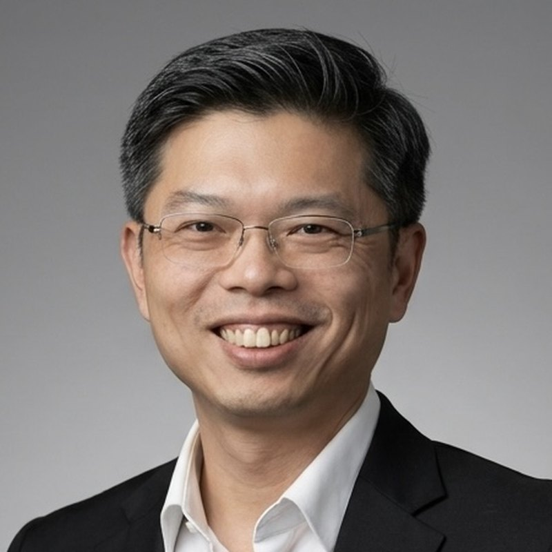

About
Chin-Hsing Kuo
Mechanical engineer. I work on mechanisms and robots, and in particular on how springs, weights and magnets can be arranged so that a machine carries itself.
I am a Senior Lecturer in the School of Engineering at the University of Wollongong, Australia, where I also serve as Academic Program Director for Mechanical Engineering. Before moving to Wollongong in 2019 I was on the faculty of the National Taiwan University of Science and Technology, and in 2017 I taught a course on static balancing of mechanisms and robots at the Tokyo Institute of Technology as a specially appointed associate professor. I obtained my PhD from King's College London in 2011.
My research is in the design of mechanisms and robotic systems that handle mechanical energy well. I am best known for work on static balancing and gravity compensation; the programme also covers linkage synthesis, parallel manipulators, reconfigurable mechanisms, robotic actuators, rehabilitation devices, surgical robotics and, more recently, mechanisms for energy conversion. I have published more than a hundred peer-reviewed papers and hold four granted US patents, two of which have been transferred to industry.

Roles
- ASME
- Fellow (2024). Past Chair, Mechanisms and Robotics Committee (Chair 2024–2026).
- IFToMM
- Chair, Technical Committee for Linkages and Mechanical Controls (2024–2027).
- Editorial
- Associate Editor, ASME Journal of Mechanical Design; Associate Editor, Mechanism and Machine Theory.
- Awards
- ASME Freudenstein/General Motors Young Investigator Award (2014); JSPS International Research Fellow (2023).
Contact
- chkuo@uow.edu.au
- Phone
- +61 2 4221 3060
- Address
- School of Engineering, University of Wollongong, Wollongong NSW 2522, Australia
- Profiles
- Google Scholar · UOW Scholars · Publication list
Beyond the lab
I keep a collection of planimeters, the mechanical instruments that measure area by tracing a boundary. A site about the collection, in Chinese and English, is in preparation.